Observer Magazine 26th October 1969
I spotted this old Observer magazine computer special on eBay while searching for old computer graphic publications. The Observer is a Sunday sister newspaper to The Guardian and is still published with a 'Sunday supplement' magazine today. I posted the picture on Merveilles and it got a little interest, being prone to impulse buying I went back to eBay and bought the old magazine. This webpage has images embedded of all the computer related pages together with the full text.
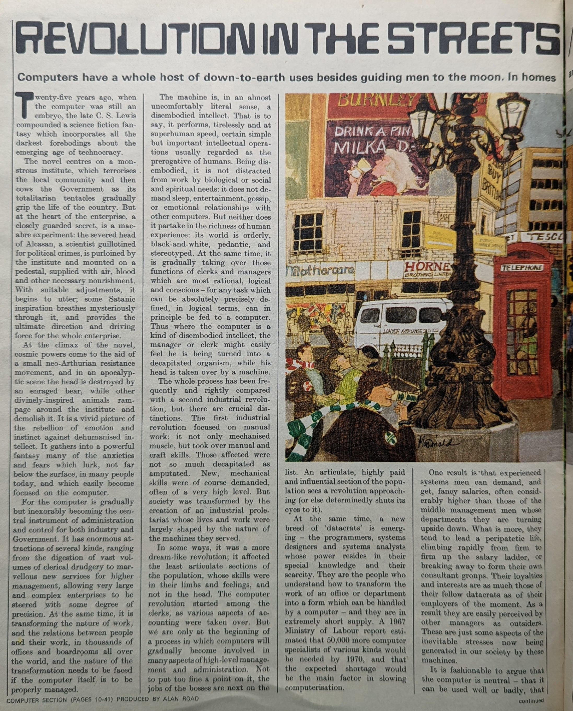
REVOLUTION IN THE STREETS
Computers have a whole host of down-to-earth uses besides guiding men to the moon. In homes and high streets their influence is increasing swiftly if silently. JOHN DAVY analyses their progress.
Twenty-five years ago, when the computer was still an embryo, the late C. S. Lewis compounded a science fiction fan- tasy which incorporates all the darkest forebodings about the emerging age of technocracy.
The novel centres on a mon- strous institute, which terrorises the local community and then the Government as its totalitarian tentacles gradually grip the life of the country. But at the heart of the enterprise, a closely guarded secret, is a mac- abre experiment: the severed head of Alcasan, a scientist guillotined for political crimes, is purloined by the institute and mounted on a pedestal, supplied with air, blood and other necessary nourishment. With suitable adjustments, it begins to utter; some Satanic inspiration breathes mysteriously through it, and provides the ultimate direction and driving force for the whole enterprise.
At the climax of the novel, cosmic powers come to the aid of a small neo-Arthurian resistance movement, and in an apocalyp- tic scene the head is destroyed by an enraged bear, while other divinely-inspired animals ram page around the institute and demolish it. It is a vivid picture of the rebellion of emotion and instinct against dehumanised in- tellect. It gathers into a powerful fantasy many of the anxieties and fears which lurk, not far below the surface, in many people today, and which easily become focused on the computer.
For the computer is gradually but inexorably becoming the cen- tral instrument of administration and control for both industry and Government. It has enormous at- tractions of several kinds, ranging from the digestion of vast vol- umes of clerical drudgery to mar vellous new services for higher management, allowing very large and complex enterprises to be steered with some degree of precision. At the same time, it is transforming the nature of work, and the relations between people and their work, in thousands of offices and boardrooms all over the world, and the nature of the transformation needs to be faced if the computer itself is to be properly managed.
The machine is, in an almost uncomfortably literal sense, a disembodied intellect. That is to say, it performs, tirelessly and at superhuman speed, certain simple but important intellectual opera tions usually regarded as the prerogative of humans. Being dis embodied, it is not distracted from work by biological or social and spiritual needs: it does not de mand sleep, entertainment, gossip, or emotional relationships with other computers. But neither does it partake in the richness of human experience: its world is orderly, black-and-white, pedantic, and stereotyped. At the same time, it is gradually taking over those functions of clerks and managers which are most rational, logical and conscious for any task which can be absolutely precisely de fined, in logical terms, can in principle be fed to a computer. Thus where the computer is a kind of disembodied intellect, the manager or clerk might easily feel he is being turned into a decapitated organism, while his head is taken over by a machine.
The whole process has been frequently and rightly compared with a second industrial revolu tion, but there are crucial dis tinctions. The first industrial revolution focused on manual work; it not only mechanised muscle, but took over manual and craft skills. Those affected were not so much decapitated as amputated. New, mechanical skills were of course demanded, often of a very high level. But society was transformed by the creation of an industrial proletariat whose lives and work were largely shaped by the nature of the machines they served,
In some ways, it was a more dream-like revolution; it affected the least articulate sections of the population, whose skills were in their limbs and feelings, and not in the head. The computer revolution started among the clerks, as various aspects of ac counting were taken over. But we are only at the beginning of a process in which computers will gradually become involved in many aspects of high-level manage ment and administration. Not to put too fine a point on it, the jobs of the bosses are next on the list. An articulate, highly paid and influential section of the population sees a revolution approaching (or else determinedly shuts its eyes to it).
At the same time, a new breed of 'datacrats' is emerg ing the programmers, systems designers and systems analysts whose power resides in their special knowledge and their scarcity. They are the people who understand how to transform the work of an office or department into a form which can be handled by a computer and they are in extremely short supply. A 1967 Ministry of Labour report esti mated that 50,000 more computer specialists of various kinds would be needed by 1970, and that the expected shortage would be the main factor in slowing computerisation.
One result is that experienced systems men can demand, and get, fancy salaries, often considerably higher than those of the middle management men whose departments they are turning upside down. What is more, they tend to lead a peripatetic life, climbing rapidly from firm to firm up the salary ladder, or breaking away to form their own consultant groups. Their loyalties and interests are as much those of their fellow datacrats as of their employers of the moment. As a result they are easily perceived by other managers as outsiders. These are just some aspects of the inevitable stresses now being generated in our society by these machines.
It is fashionable to argue that the computer is neutral- that it can be used well or badly, that... continued
 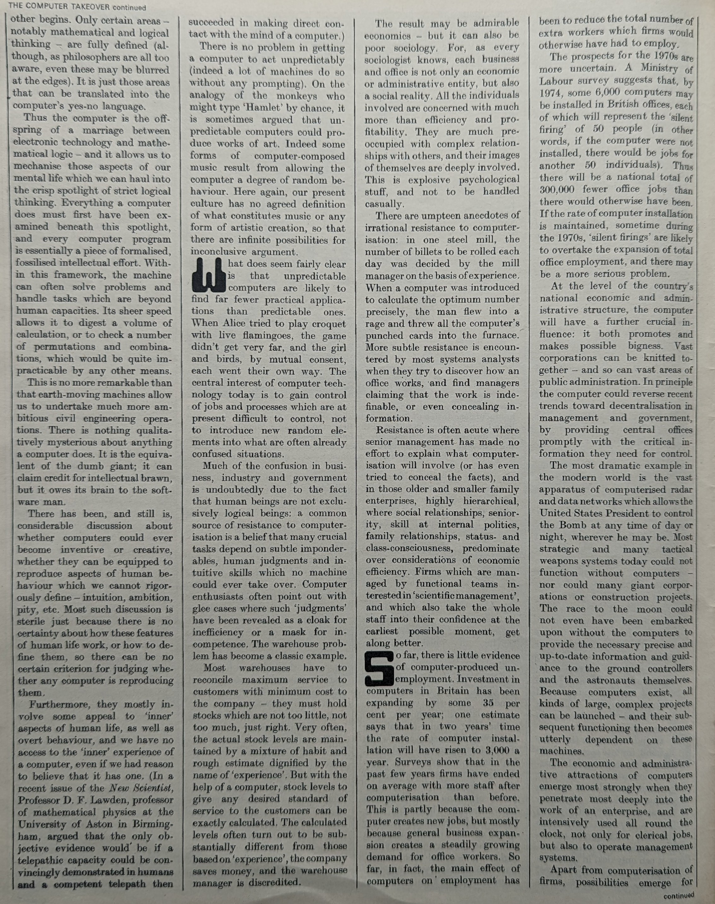
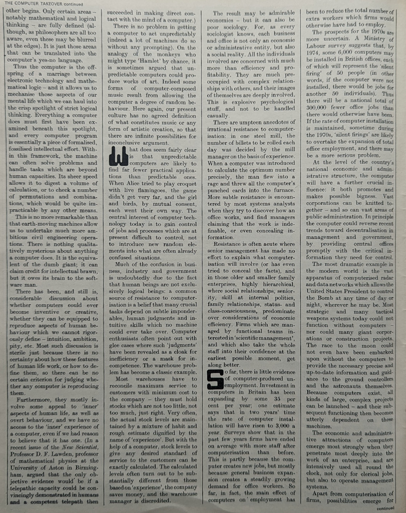
... the pessimism of the technological Jeremiah and the utopianism of the whizzo technology enthusiast are both out of place, but that men of good will and good sense will prevail if they set their minds to it. There is a trivial sense in which this is true, just as the H-bomb is neutral until it gets into the hands of a statesman or a madman. But this doesn't alter the fact that the Bomb has completely altered relations be tween nations, and the nature of defence. It has had profound repercussions throughout the industries which support it, and hence into science, education, and society in general. In the same way, the very nature of the computer, if it is introduced into our lives at all, must produce, and continue to produce, profound economic, social and cultural changes. And if its nature is not understood, and the processes it sets going in society foreseen, it could get as out of hand as the arms race.
Computers are sometimes hailed as superbrains, and sometimes dismissed as glorified adding machines. Neither description is much help in understanding the relation between human capacities and computer capacities. Human beings (when not asleep) receive 'input' from the surrounding world in the form of various sense impressions. And these 'data' are 'processed' by being related to an inner world of ideas, memories, emotions and impulses. We only live coherently in the world and recognise objects in it by relating these sense impressions to this inner world. But how this is done remains largely mysterious. To get a computer to perform in the most limited way what an infant can do with ease when it names an object (thus relating a sense impression to some internal representation) is a problem lying at the frontiers of current com puting technique. Indeed it seems likely that most of our mental life involves principles which we have not yet understood except in some very vague ways.
Computers can, on the other hand, imitate certain simple mental and logical oper ations which we can define very cisely, and can do so at an enormous speed. But the type of operation is limited by the computer's specific electronic nature: like participants in the radio programme Twenty Ques tions, it can only deal in questions which can be answered with 'yes' or 'no'. This is because its total vocabulary is built up from two elements the presence or absence of an electric pulse.
At the heart of every computer, in its central processing unit, there is a timing element and a device for detecting and counting electronic pulses. The computer's essential mental life, in so far as it might be said to have one, consists in registering the fact that, at any particular instant of time, a pulse is or is not present. What is remarkable is the ingenuity which the human mind has shown in reducing apparently complex and even diffuse problems to rigorous chains of single steps which can be handled with the yes/no logic appropriate to computers.
The dizzy advance of computer technology of recent years (which is still showing no signs of slackening) has not involved the introduction of any new principles into this fundamental level of computer operation. The advances have basically been of three kinds. In the first place, the sheer speed of the central processing unit, the rate at which it can register pulses, has been accelerated enormously, so that the average machine's pulse rate has gone up from a few hundred or thousand beats a second to several hundred million.
Secondly, there have been rapid advances in computer memories nowadays these usually take the form of magnetic pigeonholes in which an electric pulse is, or is not, stored as an area of local magnetisation. The pigeonholes are arranged on magnetic tapes or drums, or as tiny magnetic doughnuts in a 'core store'. Modern memories are much larger, items can be entered and with drawn much faster and more conveniently, and the whole store can be scanned and manipulated with great flexibility, compared with the laborious memory arrangements incorporated in the earliest computers.
The third major advance has been in exploiting this technology through the development and use of much more elaborate programs - ways of organising and proces sing data so as to feed them with maximum speed and efficiency through the electronic needle's eye of the central processing unit.
There are undoubtedly further and possibly spectacular advances to come in computer hardware; some remarkable new types of memory are in the laboratories at present, together with a good deal of experimental circuitry which will allow the machine to 'guess' and to 'learn' in a limited sense. But these depend for their exploitation on advances in programming and this is now the crucial frontier of the computer age.
Half the cost of any com puter system now lies in the software' or pro gramming effort which goes into it, and the industry is seeing the rise of 'software houses' selling programming skills which promise to become more important than the hardware manufacturers. At the research level, small groups in institutes and universities are trying to translate ever more complex tasks and mental operations into logical terms suit able for the computer.
Pushing hardest at the frontiers of present techniques are the 'Eye Brain-Hand' projects at places like Edinburgh, Stanford and the Massachusetts Institute. of Technology. Outwardly, the performance looks rather primitive: a TV eye scans the surroundings and informs a computer, which directs some form of mechanical hand to trundle across the floor and pick up an object. We do this kind of thing all day without conscious effort. But to achieve the most clumsy performance of such tasks by computer demands not only very powerful machines, but also some highly rarefied programming techniques.
One simple aspect of the problem is that any particular object can register an infinite number of different images on an eye (whether TV or human) according to the angle from which it is viewed and the distance. The human mind has an extra ordinary capacity to hold some generalised concept of an object, a kind of Platonic Universal Idea of a thing, and relate it to the particular image registering on the eye at the moment. It is proving extremely difficult to define pre cisely the nature of these genera lised concepts in any way which is useful to a computer, which is easily confused if its eye scans an object from an unfamiliar angle. This may underline a characteristic contrast between the mind of man and the mind of the com puter: much of our mental life is, in a sense, blurred, mobile and im precise. Each idea, image or memory is part of a whole web of consciousness, and it is hard to say where one idea leaves off and another begins. Only certain areas - notably mathematical and logical thinking are fully defined (although, as philosophers are all too aware, even these may be blurred at the edges). It is just those areas that can be translated into the computer's yes-no language.
Thus the computer is the off spring of a marriage between electronic technology and mathe matical logic and it allows us to mechanise those aspects of our mental life which we can haul into the crisp spotlight of strict logical thinking. Everything a computer does must first have been ex amined beneath this spotlight, and every computer program is essentially a piece of formalised, fossilised intellectual effort. With in this framework, the machine can often solve problems and handle tasks which are beyond. human capacities. Its sheer speed allows it to digest a volume of calculation, or to check a number of permutations and combina tions, which would be quite im practicable by any other means.
This is no more remarkable than that earth-moving machines allow us to undertake much more am bitious civil engineering opera tions. There is nothing qualita tively mysterious about anything a computer does. It is the equivalent of the dumb giant; it can claim credit for intellectual brawn, but it owes its brain to the software man.
There has been, and still is, considerable discussion about whether computers could ever become inventive or creative, whether they can be equipped to reproduce aspects of human be haviour which we cannot rigor ously define - intuition, ambition, pity, etc. Most such discussion is sterile just because there is no certainty about how these features of human life work, or how to de fine them, so there can be no certain criterion for judging whether any computer is reproducing them.
Furthermore, they mostly in volve some appeal to 'inner' aspects of human life, as well as overt behaviour, and we have no access to the inner' experience of a computer, even if we had reason to believe that it has one. (In a recent issue of the New Scientist, Professor D. F. Lawden, professor of mathematical physics at the University of Aston in Birmingham, argued that the only objective evidence would be if a telepathic capacity could be convincingly demonstrated in humans and a competent telepath then succeeded in making direct contact with the mind of a computer.)
There is no problem in getting a computer to act unpredictably (indeed a lot of machines do so without any prompting). On the analogy of the monkeys who might type 'Hamlet' by chance, it is sometimes argued that unpredictable computers could pro duce works of art. Indeed some forms of computer-composed music result from allowing the computer a degree of random be haviour. Here again, our present culture has no agreed definition of what constitutes music or any form of artistic creation, so that. there are infinite possibilities for inconclusive argument.
What does seem fairly clear is that unpredictable computers are likely to find far fewer practical applica tions than predictable ones. When Alice tried to play croquet with live flamingoes, the game didn't get very far, and the girl and birds, by mutual consent, each went their own way. The central interest of computer tech nology today is to gain control of jobs and processes which are at present difficult to control, not to introduce new random ele ments into what are often already confused situations.
Much of the confusion in business, industry and government is undoubtedly due to the fact that human beings are not exclusively logical beings: a common source of resistance to computerisation is a belief that many crucial tasks depend on subtle imponder ables, human judgments and intuitive skills which no machine could ever take over. Computer enthusiasts often point out with glee cases where such judgments' have been revealed as a cloak for inefficiency or a mask for in competence. The warehouse problem has become a classic example.
Most warehouses. have to reconcile maximum service to customers with minimum cost to the company - they must hold stocks which are not too little, not too much, just right. Very often, the actual stock levels are maintained by a mixture of habit and rough estimate dignified by the name of 'experience'. But with the help of a computer, stock levels to give any desired standard of service to the customers can be exactly calculated. The calculated levels often turn out to be substantially different from those based on 'experience', the company saves money, and the warehouse manager is discredited.
The result may be admirable economics but it can also be poor sociology. For, as every sociologist knows, each business and office is not only an economic or administrative entity, but also a social reality. All the individuals involved are concerned with much more than efficiency and pro fitability. They are much pre occupied with complex relation ships with others, and their images of themselves are deeply involved. This is explosive psychological stuff, and not to be handled casually.
There are umpteen anecdotes of irrational resistance to computer isation: in one steel mill, the number of billets to be rolled each day was decided by the mill manager on the basis of experience. When a computer was introduced to calculate the optimum number precisely, the man flew into a rage and threw all the computer's punched cards into the furnace. More subtle resistance is encoun tered by most systems analysts when they try to discover how an office works, and find managers claiming that the work is indefinable, or even concealing in formation.
Resistance is often acute where senior management has made no effort to explain what computer isation will involve (or has even tried to conceal the facts), and in those older and smaller family enterprises, highly hierarchical, where social relationships, senior ity, skill at internal politics, family relationships, status- and class-consciousness, predominate over considerations of economic efficiency. Firms which are man aged by functional teams in terested in 'scientific management', and which also take the whole staff into their confidence at the earliest possible moment, get along better.
So far, there is little evidence of computer-produced un employment. Investment in computers in Britain has been expanding by cent per year; some one 35 per estimate says that in two years' time the rate of computer instal lation will have risen to 3,000 a year. Surveys show that in the past few years firms have ended on average with more staff after computerisation than before. This is partly because the com puter creates new jobs, but mostly because general business expan sion creates a steadily growing demand for office workers. So far, in fact, the main effect of computers on employment has been to reduce the total number of extra workers which firms would otherwise have had to employ.
The prospects for the 1970s are more uncertain. A Ministry of Labour survey suggests that, by 1974, some 6,000 computers may be installed in British offices, each of which will represent the 'silent firing of 50 people (in other words, if the computer were not installed, there would be jobs for another 50 individuals). Thus there will be a national total of 300,000 fewer office jobs than there would otherwise have been. If the rate of computer installation is maintained, sometime during the 1970s, 'silent firings' are likely to overtake the expansion of total office employment, and there may be a more serious problem.
At the level of the country's national economic and admin istrative structure, the computer will have a further crucial in fluence: it both promotes and makes possible bigness. Vast corporations can be knitted to gether and so can vast areas of public administration. In principle the computer could reverse recent trends toward decentralisation in management and government, by providing central offices promptly with the critical in formation they need for control.
The most dramatic example in the modern world is the vast apparatus of computerised radar and data networks which allows the United States President to control the Bomb at any time of day or night, wherever he may be. Most strategic and many tactical weapons systems today could not function without computers nor could many giant corporations or construction projects. The race to the moon could not even have been embarked upon without the computers to provide the necessary precise and up-to-date information and guidance to the ground controllers and the astronauts themselves. Because computers exist, all kinds of large, complex projects can be launched and their subsequent functioning then becomes utterly machines. dependent on these machines
The economic and administra tive attractions of computers emerge most strongly when they penetrate most deeply into the work of an enterprise, and are intensively used all round the clock, not only for clerical jobs, but also to operate management systems.
Apart from computerisation of firms, possibilities emerge for... continued
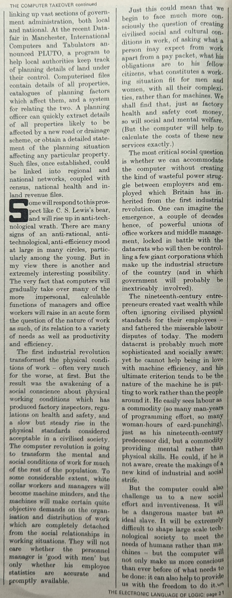
... linking up vast sections of government administration, both local and national. At the recent Data-fair in Manchester, International Computers and Tabulators an nounced PLUTO, a program to help local authorities keep track of planning details of land under their control. Computerised files contain details of all properties, catalogues of planning factors which affect them, and a system for relating the two. A planning officer can quickly extract details of all properties likely to be affected by a new road or drainage scheme, or obtain a detailed state ment of the planning situation affecting any particular property. Such files, once established, could be linked into regional and national networks, coupled with census, national health and inland revenue files.
Some will respond to this pros- pect like C. S. Lewis's bear, and will rise up in anti-technological wrath. There are many signs of an anti-rational, anti-technological, anti-efficiency mood at large in many circles, particularly among the young. But in my view there is another and extremely interesting possibility. The very fact that computers will gradually take over many of the more impersonal, calculable functions of managers and office workers will raise in an acute form the question of the nature of work as such, of its relation to a variety of needs as well as productivity and efficiency.
The first industrial revolution transformed the physical conditions of work often very much for the worse, at first. But the result was the awakening of a social conscience about physical working conditions which has produced factory inspectors, regu- lations on health and safety, and a slow but steady rise in the physical standards considered acceptable in a civilised society. The computer revolution is going to transform the mental and social conditions of work for much of the rest of the population. To some considerable extent, white collar workers and managers will become machine minders, and the machines will make certain quite objective demands on the organ. isation and distribution of work which are completely detached from the social relationships in working situations. They will not care whether the personnel manager is 'good with men' but only whether statistics are his employee accurate and promptly available.
Just this could mean that we begin to face much more consciously the question of creating civilised social and cultural con ditions in work, of asking what a person may expect from work apart from a pay packet, what his obligations are to his fellow citizens, what constitutes a work. ing situation fit for men and women, with all their complexi ties, rather than for machines. We shall find that, just as factory health and safety cost money, so will social and mental welfare. (But the computer will help to calculate the costs of these new services exactly.)
The most critical social question is whether we can accommodate the computer without creating the kind of wasteful power struggle between employers and employed which Britain has inherited from the first industrial revolution. One can imagine the emergence, a couple of decades hence, of powerful unions of office workers and middle management, locked in battle with the datacrats who will then be control ling a few giant corporations which make up the industrial structure of the country (and in which government will probably be inextricably involved).
The nineteenth-century entrepreneurs created vast wealth while often ignoring civilised physical standards for their employees - and fathered the miserable labour disputes of today. The modern datacrat is probably much more sophisticated and socially aware; yet he cannot help being in love with machine efficiency, and his ultimate criterion tends to be the nature of the machine he is put ting to work rather than the people around it. He easily sees labour as a commodity (so many man-years of programming effort, so many woman-hours of card-punching), just as his nineteenth-century predecessor did, but a commodity providing mental rather than physical skills. He could, if he is not aware, create the makings of a new kind of industrial and social strife
But the computer could also challenge us to a new social effort and inventiveness. It will be a dangerous master but an ideal slave. It will be extremely difficult to shape large scale tech nological society to meet the needs of humans rather than ma chines - but the computer will not only make us more conscious than ever before of what needs to be done: it can also help to provide us with the freedom to do it.
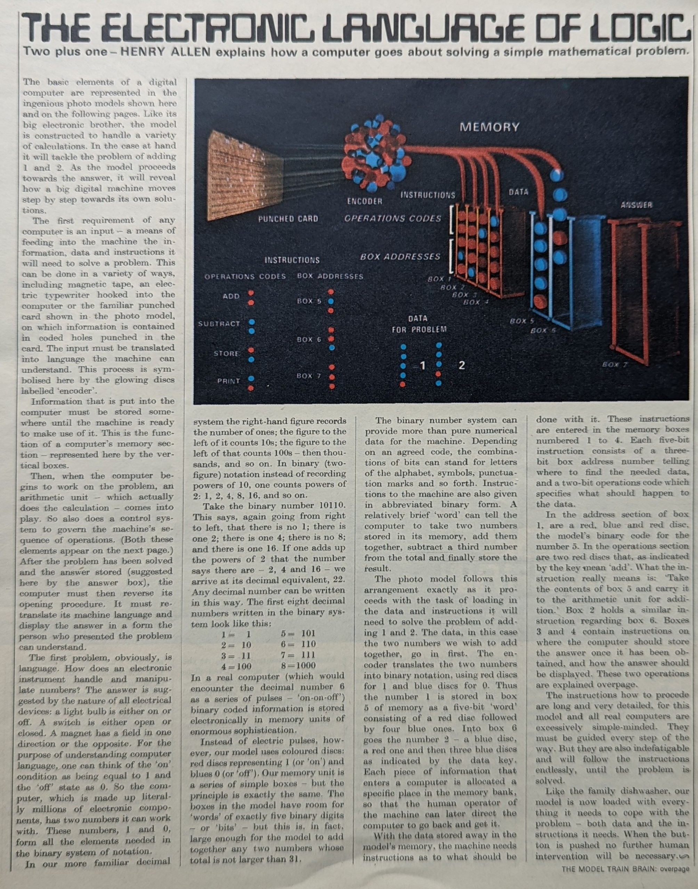
THE ELECTRONIC LANGUAGE OF LOGIC
Two plus one-HENRY ALLEN explains how a computer goes about solving a simple mathematical problem.
The basic elements of a digital computer are represented in the ingenious photo models shown here and on the following pages. Like its big electronic brother, the model is constructed to handle a variety of calculations. In the case at hand it will tackle the problem of adding 1 and 2. As the model proceeds towards the answer, it will reveal how a big digital machine moves step by step towards its own solutions.
The first requirement of any computer is an input a means of feeding into the machine the in formation, data and instructions it will need to solve a problem. This can be done in a variety of ways, including magnetic tape, an electric typewriter hooked into the computer or the familiar punched card shown in the photo model, on which information is contained in coded holes punched in the card. The input must be translated into language the machine can understand. This process is sym bolised here by the glowing discs labelled 'encoder.
Information that is put into the computer must be stored some where until the machine is ready to make use of it. This is the func tion of a computer's memory sec tion represented here by the ver tical boxes.
Then, when the computer begins to work on the problem, an arithmetic unit which actually does the calculation comes into play. So also does a control system to govern the machine's sequence of operations. (Both these elements appear on the next page.) After the problem has been solved and the answer stored (suggested here by the answer box), the computer must then reverse its opening procedure. It must retranslate its machine language and display the answer in a form the person who presented the problem can understand.
The first problem, obviously, is language. How does an electronic instrument handle and manipulate numbers? The answer is sug gested by the nature of all electrical devices: a light bulb is either on or off. A switch is either open or closed. A magnet has a field in one direction or the opposite. For the purpose of understanding computer language, one can think of the 'on' condition as being equal to 1 and the 'off' state as 0. So the computer, which is made up literally millions of electronic components, has two numbers it can work with. These numbers, 1 and 0, form all the elements needed in the binary system of notation.
In our more familiar decimal system the right-hand figure records the number of ones; the figure to the left of it counts 10s; the figure to the left of that counts 100s - then thousands, and so on. In binary (two figure) notation instead of recording powers of 10, one counts powers of 2: 1, 2, 4, 8, 16, and so on.
Take the binary number 10110. This says, again going from right to left, that there is no 1; there is one 2; there is one 4; there is no 8; and there is one 16. If one adds up the powers of 2 that the number says there are 2, 4 and 16 we arrive at its decimal equivalent, 22. Any decimal number can be written in this way. The first eight decimal numbers written in the binary system look like this:
1 = 1 5 = 101
2 = 10 6 = 110
3 = 11 7 = 111
4 = 100 8 = 1000
In a real computer (which would encounter the decimal number 6 as a series of pulses- 'on-on-off') binary coded information is stored electronically in memory units of enormous sophistication.
Instead of electric pulses, how ever, our model uses coloured discs: red discs representing 1 (or 'on') and blues 0 (or 'off"). Our memory unit is a series of simple boxes - but the principle is exactly the same. The boxes in the model have room for 'words' of exactly five binary digits or 'bits' but this is, in fact. large enough for the model to add together any two numbers whose total is not larger than 31.
The binary number system can provide more than pure numerical data for the machine. Depending on an agreed code, the combina tions of bits can stand for letters. of the alphabet, symbols, punctua tion marks and so forth. Instruc tions to the machine are also given in abbreviated binary form. A relatively brief 'word' can tell the computer to take two numbers. stored in its memory, add them together, subtract a third number from the total and finally store the result.
The photo model follows this arrangement exactly as it proceeds with the task of loading in the data and instructions it will need to solve the problem of add ing 1 and 2. The data, in this case the two numbers we wish to add together, go in first. The en coder translates the two numbers into binary notation, using red discs for 1 and blue discs for 0. Thus the number 1 is stored in box 5 of memory as a five-bit 'word' consisting of a red dise followed by four blue ones. Into box 6 goes the number 2 a blue dise, a red one and then three blue dises as indicated by the data key. Each piece of information that enters a computer is allocated a specific place in the memory bank, so that the human operator of the machine can later direct the computer to go back and get it.
With the data stored away in the model's memory, the machine needs instructions as to what should be done with it. These instructions are entered in the memory boxes numbered 1 to 4. Each five-bit instruction consists of a three bit box address number telling where to find the needed data, and a two-bit operations code which specifies what should happen to the data.
In the address section of box 1, are a red, blue and red disc. the model's binary code for the number 5. In the operations section are two red dises that, as indicated by the key mean 'add'. What the in struction really means is: "Take the contents of box 5 and carry it to the arithmetic unit for addi tion. Box 2 holds a similar in struction regarding box 6. Boxes 3 and 4 contain instructions on where the computer should store the answer once it has been ob tained, and how the answer should be displayed. These two operations are explained overpage.
The instructions how to procede are long and very detailed, for this model and all real computers are excessively simple-minded. They must be guided every step of the way. But they are also indefatigable and will follow the instructions endlessly, until the problem is solved.
Like the family dishwasher, our model is now loaded with every thing it needs to cope with the problem both data and the in structions it needs. When the but ton is pushed no further human intervention will be necessary.
THE MODEL TRAIN BRAIN: overpage
 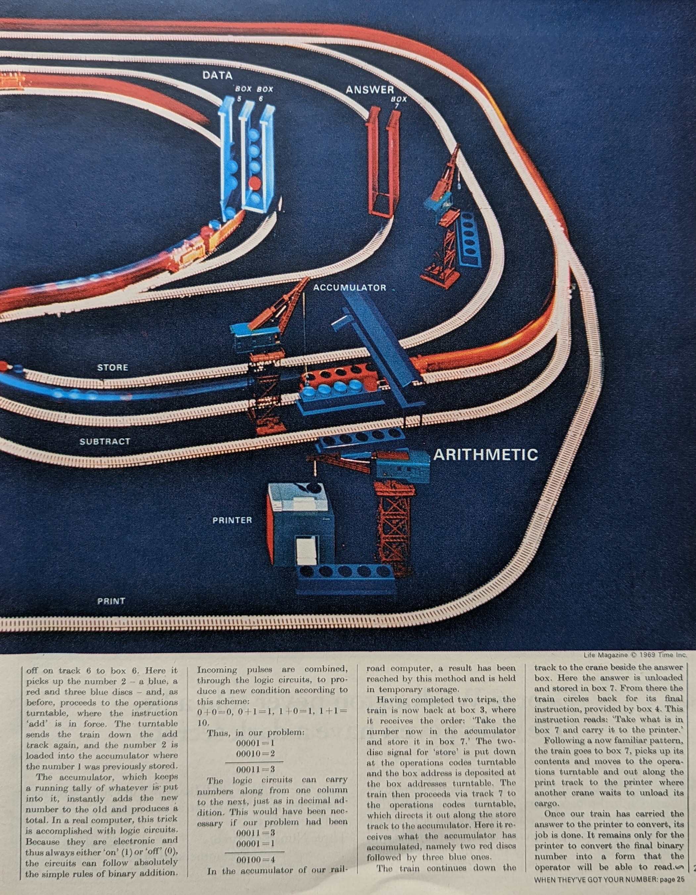
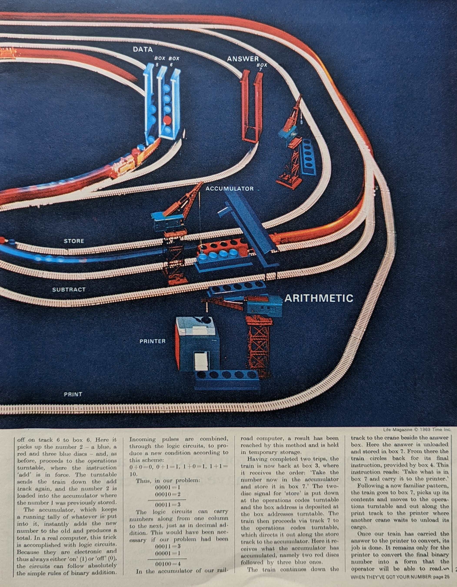
THE MODEL TRAIN BRAIN
These tracks, turntables and cranes illustrate the mechanism of a computer.
The model train on these pages shows how a real computer car ries out its task. The tracks, turn tables and cranes of the railroad system are remarkably similar in function to the wiring and elabor ate electronic switching circuits of a modern digital computer. Fur. thermore, the train will accom plish the task of adding 1 and 2 in almost precisely the same way that a computer would add any two numbers: taking steps one at a time in an ordered sequence,
The boxes containing the com puter's instructions, data and, eventually, the answer are here separated to show the actual process more clearly. The remaining major 2 elements of the computer have been added: 1) the control section at centre makes certain that instructions are carried out in proper sequence; 2) the arithmetic unit at lower right will ultimately combine the two numbers in our problem.
Starting at the Instructions area, the train picks up its first load, consisting of five coloured discs from box 1. These dises constitute an order: "Take the contents of box 5 and deliver it to the arithmetic unit for addition. The three discs - red, blue, red already on the train make up the box address for box 5. The two red discs just about to land on the train make up the operations code for addition.
Thus loaded, the train proceeds towards the control section. At the lower turntable the two red dises of the operational order are un loaded and the order 'add' is read and remembered. The train moves to the upper turntable, where the box address is taken off. Guided by this address, the upper turntable sends the train out on track 5 to its destination, box 5. Here it picks up the box's contents, which are part of the data for the problem, in this case the number 1.
With this cargo, the train circles back to the operations codes turn table where, remembering the 'add' order already deposited there, the turntable sends it out on the track labelled 'Add' to the arithmetic unit. There five discs signifying the number 1 are lifted off and put in the accumulator, the component of the arithmetic unit that performs arithmetical operations. The discs arrived on the add track, so they will be added.
Since the instruction has been carried out, the train now loops up and around and returns to the instructions area. There it receives the orders for its second trip from box 2. These instructions tell it to take the contents of box 6 to the accumulator for addition. As on its first trip, the train goes to control/ where the two discs meaning 'add' are first unloaded at operations then at the box addresses turntable the box address discs are taken off and the turntable sends the train off on track 6 to box 6. Here it picks up the number 2 a blue, a red and three blue discs. and, as before, proceeds to the operations turntable, where the instruction 'add' is in force. The turntable sends the train down the add track again, and the number 2 is loaded into the accumulator where the number I was previously stored.
The accumulator, which keeps a running tally of whatever is put into it, instantly adds the new number to the old and produces a total. In a real computer, this trick is accomplished with logic circuits. Because they are electronic and thus always either 'on' (1) or 'off' (0), the circuits can follow absolutely the simple rules of binary addition.
Incoming pulses are combined, through the logic circuits, to produce a new condition according to this scheme:
0 + 0 = 0, 0 + 1 = 1, 1 + 0 = 1, 1 + 1 = 10
Thus, in our problem:
00001 = 1
00010 = 2
_________
00011 = 3
The logic circuits can carry numbers along from one column to the next, just as in decimal addition. This would have been nec essary if our problem had been
00011 = 3
00001 = 1
_________
00100 = 4
In the accumulator of our railroad computer, a result has been reached by this method and is held in temporary storage.
Having completed two trips, the train is now back at box 3, where it receives the order: "Take the number now in the accumulator and store it in box 7. The two disc signal for 'store' is put down at the operations codes turntable and the box address is deposited at the box addresses turntable. The train then proceeds via track 7 to the operations codes turntable, which directs it out along the store track to the accumulator. Here it receives what the accumulator has accumulated, namely two red discs followed by three blue ones.
The train continues down the track to the crane beside the answer box. Here the answer is unloaded and stored in box 7. From there the train circles back for its final instruction, provided by box 4. This instruction reads: "Take what in box 7 and carry it to the printer.'
Following a now familiar pattern, the train goes to box 7, picks up its contents and moves to the opera tions turntable and out along the print track to the printer where another crane waits to unload its cargo.
Once our train has carried the answer to the printer to convert, its job is done. It remains only for the printer to convert the final binary number into form that the a operator will be able to read.

WHEN THEY'VE GOT YOUR NUMBER
Computers make it a comparatively easy matter to establish vast central data banks containing intimate information about every one of us. ALAN ROAD asks whether these new Domesday Books really are desirable or further steps towards George Orwell's vision of 1984. The drawings are by Frank Dickens.
Recently I underwent a change of identity. Out the old Alan Road, and in came the new 007586. It happened, pain lessly, when the records of the local branch of my bank were at last computerised. The new hieroglyphics are written, it is said, in magnetic ink, which sounds like something sold in joke shops.
Automation, I was assured in an explanatory leaflet, would not affect the personal nature of the bank manager's relationship with me. And anyway, I may be 00715816 to him, but to my doctor I am still XIBH-7-3, and in a college registry there is, I hope, still someone who recalls me with affection as 19261. Cer tainly there is in some corner of a foreign field an aging drill sergeant who will never forget the two left feet of 22902998.
By now most of us are more or less resigned to these alter egos. While at home, for instance, one's National Insurance number might be ZH-28-28-61-B, abroad one becomes Her Britannic Majesty's subject No. N-89903. And for each persona there is a corres ponding store of accumulated statistics. From the time when our births are registered for us to the day when our departure from this life is similarly documented,
we all contribute knowingly or unknowingly to these stockpiles of statistics. School reports, applications for jobs, medical histories, references and, in some cases, police records plot our courses from the cradle to the crematorium. Some information we give willingly; some, like Inland Revenue returns, are drawn from us painfully like wisdom teeth.
Why, one hears it asked with increasing urgency, should we not have one all-purpose number and why should these snatches of information about us not be stored in some central registry? Computers, which can now store all the words of the Bible on an area the size of two postcards, make such a project quite feasible.
The arguments in favour of data banks are persuasive. If I were to collapse in a Manchester street, for instance, it would obviously be useful for a doctor to have immediate access to my medical history. It may also be convenient for a clerk in London to be able to tell at a moment's notice the state of my account in a bank 200 miles away. But what if a centralised data bank were to disclose my financial standing to my doctor, or the state of my health to a bank manager, or worse, to an insurance company!
The likelihood is not as remote as many might think. Consider the new £6 million licensing centre being built for the Min istry of Transport in Swansea. The centre, which it is hoped will be in operation by 1972, will handle the registration of all new vehicles, vehicle excise licences and drivers' licences in Britain, and its records will, according to a Ministry spokesman, be avail able for the police and other 'authorised inquirers'. Other Government bodies which are computerising include the Department of Health and Social Security, which has probably the most comprehensive records in the country.
Lord Stonham has promised us a national police computer to pro cess records for the whole of Britain, so that every police force will have immediate access to the fingerprints, records and criminal patterns of any convicted person. Who could doubt that demonstrators and any other of society's awkward customers would eventually find themselves on such records? Or, rather, would not find themselves. For this is perhaps the most disturbing factor about the new Domesday Books which are being con sidered: those included on them may not even know they have. been inventoried. How many of the million or more Barclay card holders in Britain know, for instance, that computers keep a never-ending vigil on their spending patterns? Sudden changes would alert the staff to the possibility that a card might have been stolen from its rightful owner. In this case surveillance is obviously in the client's interest, but less scrupulous organisations might find other uses for the information.
Those who can be relied upon to rally to the banner of technological progress at all costs point out that the centralisa tion and computerisation of stocks of information in data banks raise no new moral issue, as the facts are already stored in pigeonholes and manila files in a score of central or local government offices. Com puters, it is argued, merely facilitate the process. But in fact Government departments have certain rules about sharing information. When all is com puterised, who will hold the keys to the electronic confessional!
Perhaps the most interesting feature of the current spate of anxiety over the computers' threat to privacy is that it comes to a large extent from those who work with them. Not that the experts are afraid that the computer, like HAL in Stanley Kubrick's science fiction film '2001', will make a takeover bid for power. What they fear is that man, through sheer lack of interest or laziness, will allow machines to erode his freedom.
Because people are so ill-informed about the computer revolution, technologists find themselves being called upon to make decisions which are not rightly theirs. Like the heart transplant doctors, they resent the burden of moral responsibility placed on them by their technical progress. Ultimately the problem of privacy is a SOCIO logical and political one. The politicians, say the computer men, must not be allowed to shirk it.
Some politicians have shown a willingness to shoulder the bur den, though they have for the most part adopted predictably doctrinaire attitudes along well worn party lines. From the Left come dire warnings of snooping by private companies, and soothing noises over the State's role as Big Brother, while the Right makes light of the former and plays up the bogy of State surveillance.
One man who sees himself as a technological Don Quixote a tilting at electronic windmills is Harvey Matusow, founder of the Society for the Abolition of Data Processing. A self-styled philo sophical anarchist, Mr Matusow finds that a high proportion of his 1,500 members work in com puters or in universities. A men tion recently in The Observer's Pendennis column brought him 700 letters.
He does not advocate blowing up computers, but he has from time to time hit upon ways of putting nineteenth-century a spanner in the electronic works. He boasts, for instance, of the occasion when he and a friend in the computer industry punched three holes at random in a Time subscription card and returned it to the publishers. Almost by... continued.
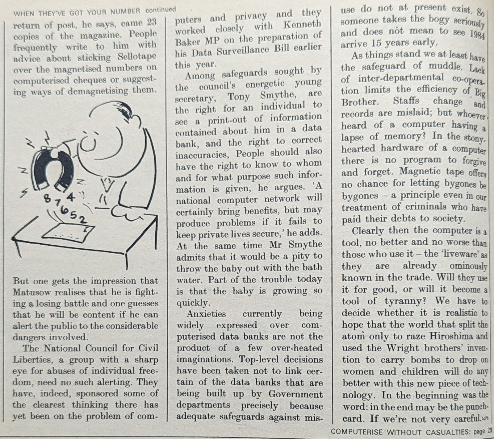
... return of post, he says, came 23 copies of the magazine. People frequently write to him with advice about sticking Sellotape over the magnetised numbers on computerised cheques or suggesting ways of demagnetising them.
But one gets the impression that Matusow realises that he is fighting a losing battle and one guesses that he will be content if he can alert the public to the considerable dangers involved.
The National Council for Civil Liberties, a group with a sharp eye for abuses of individual freedom, need no such alerting. They have, indeed, sponsored some of the clearest thinking there has yet been on the problem of computers and privacy and they worked closely with Kenneth Baker MP on the preparation of his Data Surveillance Bill earlier this year.
Among safeguards sought by the council's energetic young secretary, Tony Smythe, are the right for an individual to see a print-out of information contained about him in a data bank, and the right to correct inaccuracies, People should also have the right to know to whom and for what purpose such infor mation is given, he argues. 'A national computer network will certainly bring benefits, but may produce problems if it fails to keep private lives secure,' he adds. At the same time Mr Smythe admits that it would be a pity to throw the baby out with the bath water. Part of the trouble today is that the baby is growing so quickly.
Anxieties currently being widely expressed over com puterised data banks are not the product of a few over-heated imaginations. Top-level decisions have been taken not to link cer tain of the data banks that are being built up by Government departments precisely because adequate safeguards against misuse do not at present exist. So someone takes the bogy seriously and does not mean to see 1984 arrive 15 years early.
As things stand we at least have the safeguard of muddle. Lack of inter-departmental co-operation limits the efficiency of Big Brother. Staffs change and records are mislaid; but whoever heard of a computer having a lapse of memory? In the stony. hearted hardware of a computer there is no program to forgive and forget. Magnetic tape offers no chance for letting bygones be bygones - a principle even in our treatment of criminals who have paid their debts to society.
Clearly then the computer is a tool, no better and no worse than those who use it - the 'liveware' as they are already ominously known in the trade. Will they use it for good, or will it become a tool of tyranny? We have to decide whether it is realistic to hope that the world that split the atom only to raze Hiroshima and used the Wright brothers' invention to carry bombs to drop on women and children will do any better with this new piece of tech nology. In the beginning was the word: in the end may be the punch card. If we're not very careful.
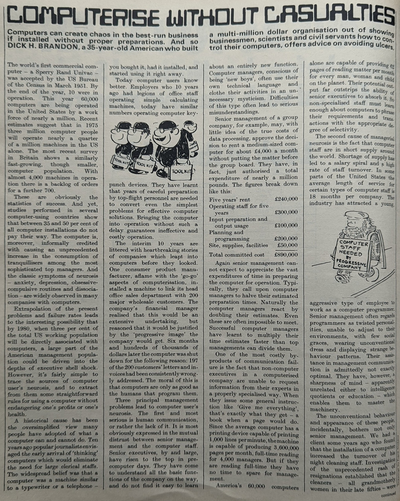
COMPUTERISE WITHOUT CASUALTIES
Computers can create chaos in the best-run business if installed without proper preparations. And so DICK H. BRANDON, a 35-year-old American who built a multi-million dollar organisation out of showing businessmen, scientists and civil servants how to control their computers, offers advice on avoiding ulcers.
The world's first commercial computer - a Sperry Rand Univac - was accepted by the US Bureau of the Census in March 1951. By the end of the year, 10 were in operation. This year 60,000 computers are being operated in the United States by a work force of nearly a million. Recent estimates suggest that in 1975 three million computer people will operate nearly a quarter of a million machines in the US alone. The most recent survey in Britain shows a similarly fast-growing, though smaller, computer population. With almost 4,000 machines in operation there is a backlog of orders for a further 700.
These are obviously the statistics of success. And yet, studies performed in several computer-using countries show that between 35 and 50 per cent of all computer installations do not pay their way. The computer is, moreover, informally credited with causing an unprecedented increase in the consumption of tranquillisers among the most sophisticated top managers. And the classic symptoms of neurosis - anxiety, depression, obsessive compulsive routines and dissociation are widely observed in many companies with computers.
Extrapolation of the present problems and failure rates leads to the interesting possibility that by 1980, when three per cent of the total US working population will be directly associated with computers, a large part of the American management population could be driven into the depths of executive shell shock. However, it's fairly simple to trace the sources of computer user's neurosis, and to extract from them some straightforward rules for using a computer without endangering one's profits or one's health.
A historical cause has been the oversimplified view many people have adopted of what a computer can and cannot do, Ten years ago popular journalists envisaged the early arrival of 'thinking' computers which would eliminate the need for large clerical staffs. The widespread belief was that a computer was a machine similar to a typewriter or a telephone - you bought it, had it installed, and started using it right away.
Today computer users know better. Employers who 10 years ago had legions of office staff operating simple calculating machines, today have similar numbers operating computer key-punch devices. They have learnt that years of careful preparation by top-flight personnel are needed to convert even the simplest problems for effective computer solutions. Bringing the computer into operation without such a delay guarantees ineffective and costly operation.
The interim 10 years are littered with heartbreaking stories of companies which leapt into computers before they looked. One consumer product manu facturer, aflame with the 'go-go' aspects of computerisation, in stalled a machine to link its head office sales department with 200 major wholesale customers. The company's financial manager but realised that this would be an extensive undertaking, reasoned that it would be justified by the progressive image' the company would get. Six months and hundreds of thousands of dollars later the computer was shut down for the following reason: 197 of the 200 customers' letters and in voices had been consistently wrongly addressed. The moral of this is that computers are only as good as the humans that program them.
Three principal management problems lead to computer user's neurosis. The first and most serious is human communication, or rather the lack of it. It is most obviously expressed in the mutual distrust between senior manage ment and the computer staff. Senior executives, by and large, have risen to the top in pre computer days. They have come to understand all the basic functions of the company on the way, and do not find it easy to learn about an entirely new function. Computer managers, conscious of being 'new boys', often use their own technical language and clothe their activities in an unnecessary mysticism. Difficulties of this type often lead to serious misunderstandings.
Senior management of a group company, for example, may, with little idea of the true costs of data processing, approve the deci sion to rent a medium-sized com puter for about £4,000 a month without putting the matter before the group board. They have, in fact, just authorised a total expenditure of nearly a million pounds. The figures break down like this:
Five years' rent: £240,000
Operating staff for five years: £300,000
Input preparation and output usage: £100,000
Planning and programming: £200,000
Site, supplies, facilities: £050,000
_________________________________________________
Total committed cost £890,000
Again senior management can not expect to appreciate the vast expenditures of time in preparing the computer for operation. Typi cally, they call upon computer managers to halve their estimated preparation times. Naturally the computer managers react. by doubling their estimates. Even these are often impossible to meet. Successful computer managers have learnt to multiply their time estimates faster than top managements can divide them.
One of the most costly by products of communication fail ure is the fact that non-computer executives in a computerised company are unable to request information from their experts in a properly specialised way. When they issue some general instruction like 'Give me everything', that's exactly what they get - a book when a page would do. Since the average computer has a printing device capable of printing 1,000 lines per minute, the machine is capable of producing 3,600,000 pages per month, full-time reading for 4,000 managers. But if they are reading full-time they have no time to spare for management.
America's 60,000 computers alone are capable of providing 2 pages of reading matter per month for every man, woman and child on the planet. Their potential out. put far outstrips the ability of senior executives to absorb it. So non-specialised staff must learn enough about computers to phrase their requirements and trans actions with the appropriate de gree of selectivity.
The second cause of managerial neurosis is the fact that computer staff are in short supply around the world. Shortage of supply has led to a salary spiral and a high rate of staff turnover. In some parts of the United States the average length of service for certain types of computer staff is 18 months per company. The industry has attracted a young, aggressive type of employee to work as a computer programmer. Senior management often regards programmers as twisted personal ities, unable to adjust to their environments, with few social graces, wearing unconventional dress and displaying strange behaviour patterns. Their assistance in management communication is admittedly not exactly optimal. They have, however, a sharpness of mind - apparently unrelated either to intelligence quotients or education which enables them to master the machinery
The unconventional behaviour and appearance of these people. incidentally, bothers not only senior management. We had a client some years ago who found that the installation of a computer increased the turnover of his night cleaning staff. Investigation of the unprecedented rash of resignations established that the cleaners - all grandmotherly women in their late fifties - were... continued
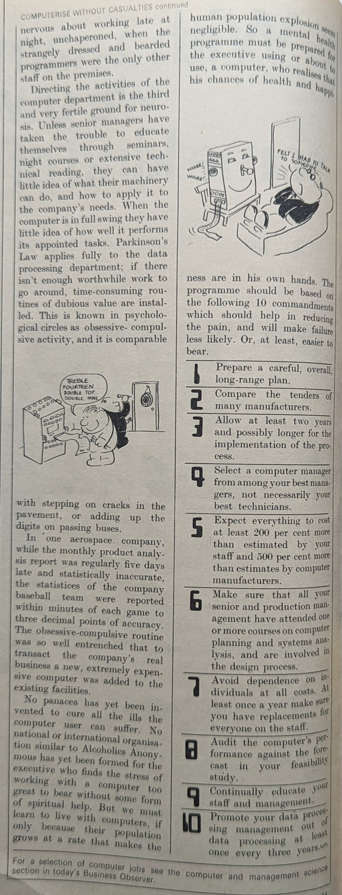
... nervous about working late at night, unchaperoned, when the strangely dressed and bearded programmers were the only other staff on the premises
Directing the activities of the computer department is the third and very fertile ground for neurosis. Unless senior managers have taken the trouble to educate themselves through seminars, night courses or extensive tech nical reading, they can have little idea of what their machinery can do, and how to apply it to the company's needs. When the computer is in full swing they have little idea of how well it performs its appointed tasks. Parkinson's Law applies fully to the data processing department; if there isn't enough worthwhile work to go around, time-consuming rou tines of dubious value are instal led. This is known in psychological circles as obsessive- compulsive activity, and it is comparable with stepping on cracks in the pavement, or adding up the digits on passing buses.
In one aerospace. company, while the monthly product analy sis report was regularly five days late and statistically inaccurate, the statistices of the company baseball team were reported within minutes of each game to three decimal points of accuracy. The obsessive-compulsive routine was so well entrenched that to transact the company's real business a new, extremely expen sive computer was added to the existing facilities.
No panacea has yet been in vented to cure all the ills the computer user can suffer. No national or international organisa tion similar to Alcoholics Anony mous has yet been formed for the executive who finds the stress of working with a computer too great to bear without some form of spiritual help. But we must learn to live with computers, if only because their population grows at a rate that makes the human population explosion negligible. So a mental health programme must be prepared for the executive using or about to use, a computer, who realises that his chances of health and happiness are in his own hands. The programme should be based on the following 10 commandments which should help in reducing the pain, and will make failure less likely. Or, at least, easier to bear.
1. Prepare a careful, overall, long-range plan.
2. Compare the tenders of many manufacturers.
3. Allow at least two years and possibly longer for the implementation of the process.
4. Select a computer manager from among your best managers, not necessarily your best technicians.
5. Expect everything to cost at least 200 per cent more than estimated by your staff and 500 per cent more than estimates by computer manufacturers.
6. Make sure that all your senior and production man agement have attended one or more courses on computer planning and systems analysis, and are involved in the design process.
7. Avoid dependence on individuals at all costs. At least once a year make sure you have replacements for everyone on the staff.
8. Audit the computer's performance against the forecast in your feasibility study.
9. Continually educate your staff and management.
10. Promote your data processing management out of data processing at least once every three years
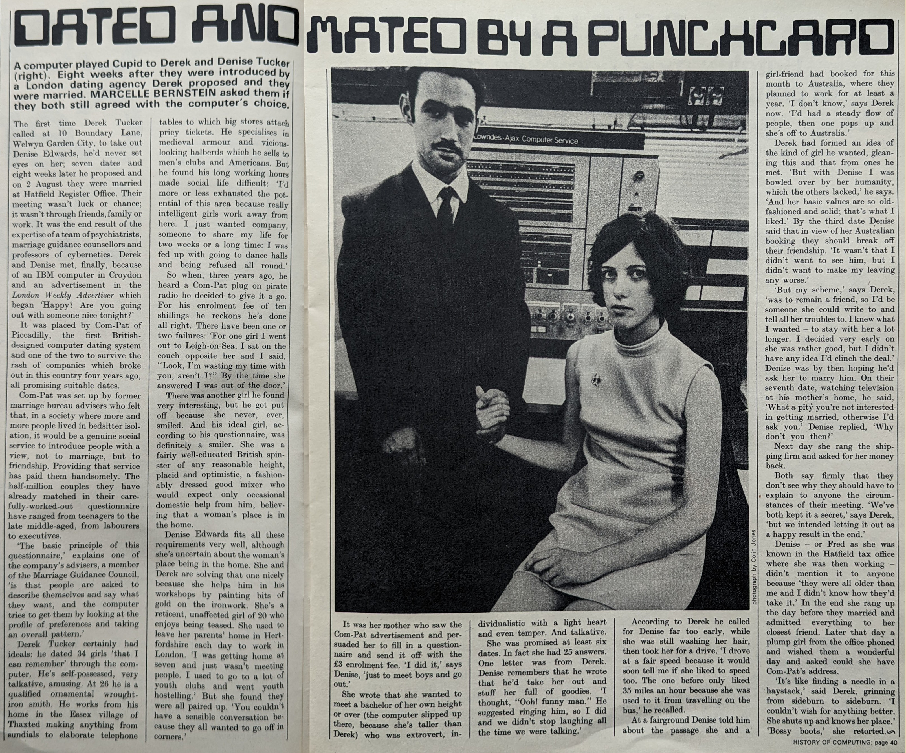
DATED AND MATED BY PUNCHCARD
A computer played Cupid to Derek and Denise Tucker (right). Eight weeks after they were introduced by a London dating agency Derek proposed and they were married. MARCELLE BERNSTEIN asked them if they both still agreed with the computer's choice.
The first time Derek Tucker called at 10 Boundary Lane, Welwyn Garden City, to take out Denise Edwards, he'd never set eyes on her; seven dates and eight weeks later he proposed and on 2 August they were married at Hatfield Register Office. Their meeting wasn't luck or chance; it wasn't through friends, family or work. It was the end result of the expertise of a team of psychiatrists, marriage guidance counsellors and professors of cybernetics. Derek and Denise met, finally, because of an IBM computer in Croydon and an advertisement in the London Weekly Advertiser which began 'Happy? Are you going out with someone nice tonight?' It was placed by Com-Pat of Piccadilly, the first British designed computer dating system and one of the two to survive the rash of companies which broke out in this country four years ago, all promising suitable dates.
Com-Pat was set up by former marriage bureau advisers who felt that, in a society where more and more people lived in bedsitter isol ation, it would be a genuine social service to introduce people with a view, not to marriage, but to friendship. Providing that service has paid them handsomely. The half-million couples they have already matched in their care fully-worked-out questionnaire have ranged from teenagers to the late middle-aged, from labourers to executives.
"The basic principle of this questionnaire,' explains one of the company's advisers, a member of the Marriage Guidance Council, is that people are asked to describe themselves and say what they want, and the computer tries to get them by looking at the profile of preferences and taking an overall pattern.'
Derek Tucker certainly had ideals: he dated 34 girls that I can remember through the com puter. He's self-possessed, very talkative, amusing. At 26 he is a qualified ornamental wrought iron smith. He works from his home in the Essex village of Thaxted making anything from sundials to elaborate telephone tables to which big stores attach pricy tickets. He specialises in medieval armour and vicious. looking halberds which he sells to men's clubs and Americans. But he found his long working hours made social life difficult: 'I'd more or less exhausted the pot ential of this area because really intelligent girls work away from here. I just wanted company, someone to share my life for two weeks or a long time: I was fed up with going to dance halls and being refused all round.'
So when, three years ago, he heard a Com-Pat plug on pirate radio he decided to give it a go. For his enrolment fee of ten shillings he reckons he's done all right. There have been one or two failures: 'For one girl I went out to Leigh-on-Sea. I sat on the couch opposite her and I said, "Look, I'm wasting my time with you, aren't I?" By the time she answered I was out of the door.'
There was another girl he found very interesting, but he got put off because she never, ever, smiled. And his ideal girl, ac cording to his questionnaire, was definitely a smiler. She was a fairly well-educated British spin ster of any reasonable height, placid and optimistic, a fashion ably dressed good mixer who would expect only occasional domestic help from him, believ ing that a woman's place is in the home.
Denise Edwards fits all these requirements very well, although she's uncertain about the woman's place being in the home. She and Derek are solving that one nicely because she helps him in his workshops by painting bits of gold on the ironwork. She's a reticent, unaffected girl of 20 who enjoys being teased. She used to leave her parents' home in Hert fordshire each day to work in London. I was getting home at seven and just wasn't meeting people. I used to go to a lot of youth clubs and went youth hostelling.' But she found they were all paired up. 'You couldn't have a sensible conversation be cause they all wanted to go off in corners.'
It was her mother who saw the Com-Pat advertisement and per suaded her to fill in a question naire and send it off with the £3 enrolment fee. 'I did it,' says Denise, 'just to meet boys and go out.'
She wrote that she wanted to meet a bachelor of her own height or over (the computer slipped up there, because she's taller than Derek) who was extrovert, individualistic with a light heart and even temper. And talkative. She was promised at least six dates. In fact she had 25 answers. One letter was from Derek. Denise remembers that he wrote that he'd take her out and stuff her full of goodies. 'I thought, "Ooh! funny man." He suggested ringing him, so I did and we didn't stop laughing all the time we were talking.'
According to Derek he called for Denise far too early, while she was still washing her hair, then took her for a drive. 'I drove at a fair speed because it would soon tell me if she liked to speed too. The one before only liked 35 miles an hour because she was used to it from travelling on the bus,' he recalled.
At a fairground Denise told him about the passage she and a girl-friend had booked for this month to Australia, where they planned to work for at least a year. 'I don't know,' says Derek now. 'I'd had a steady flow of people, then one pops up and she's off to Australia."
Derek had formed an idea of the kind of girl he wanted, glean ing this and that from ones he met. But with Denise I was bowled over by her humanity, which the others lacked,' he says. 'And her basic values are so old fashioned and solid; that's what I liked. By the third date Denise said that in view of her Australian booking they should break off their friendship. It wasn't that I didn't want to see him, but I didn't want to make my leaving any worse.'
'But my scheme,' says Derek, 'was to remain a friend, so I'd be someone she could write to and tell all her troubles to. I knew what I wanted to stay with her a lot longer. I decided very early on she was rather good, but I didn't have any idea I'd clinch the deal.' Denise was by then hoping he'd ask her to marry him. On their seventh date, watching television at his mother's home, he said, 'What a pity you're not interested in getting married, otherwise I'd ask you.' Denise replied, 'Why don't you then?'
Next day she rang the ship ping firm and asked for her money back.
Both say firmly that they don't see why they should have to explain to anyone the circum stances of their meeting. 'We've both kept it a secret,' says Derek, 'but we intended letting it out as a happy result in the end.'
Denise or Fred as she was known in the Hatfield tax office where she was then working didn't mention it to anyone because they were all older than me and I didn't know how they'd take it.' In the end she rang up the day before they married and admitted everything to her closest friend. Later that day a plump girl from the office phoned and wished them a wonderful day and asked could she have Com-Pat's address.
'It's like finding a needle in a haystack,' said Derek, grinning from sideburn to sideburn. 'I couldn't wish for anything better. She shuts up and knows her place.' 'Bossy boots,' she retorted.